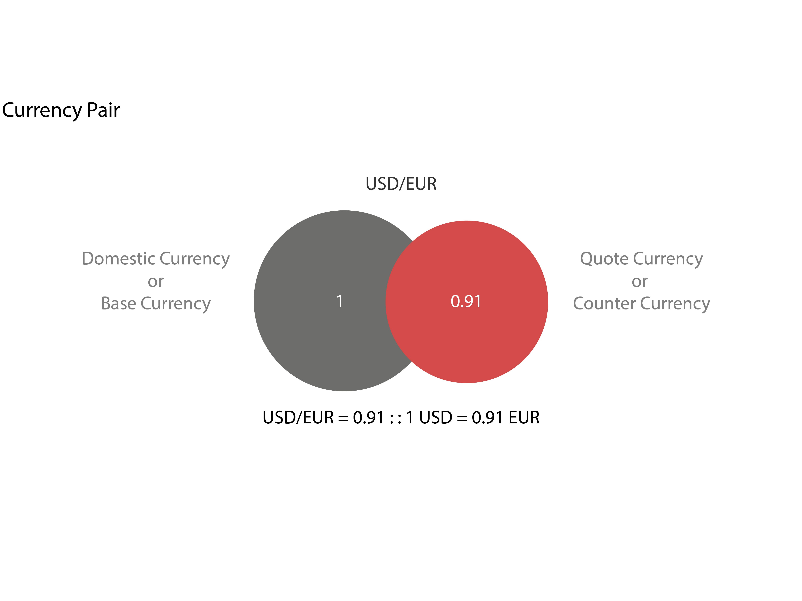
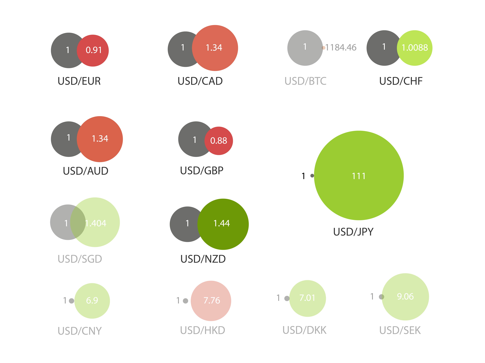
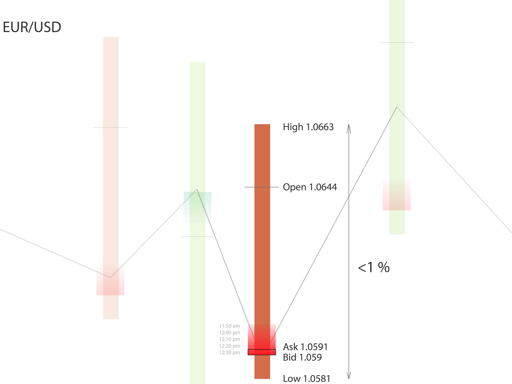
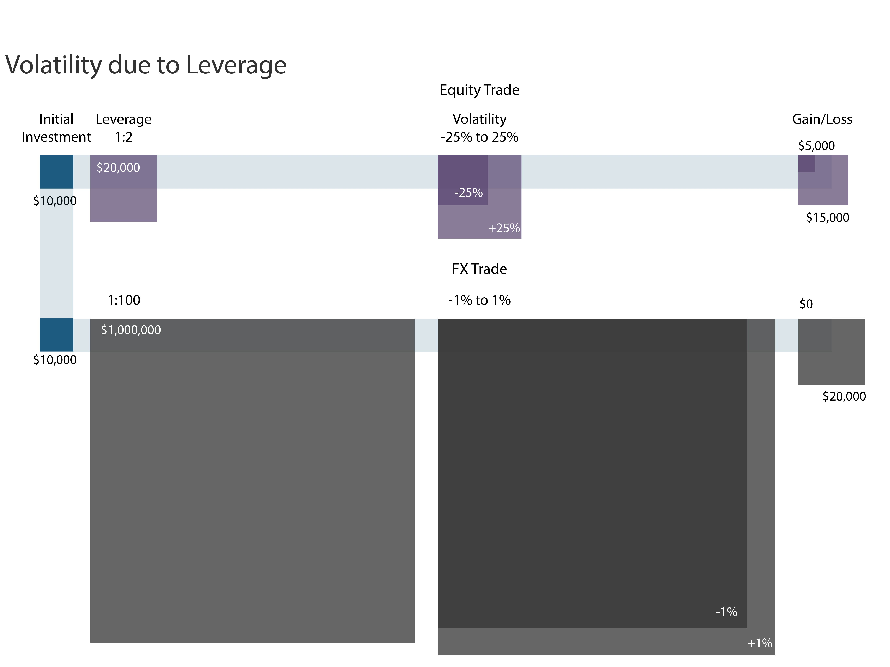
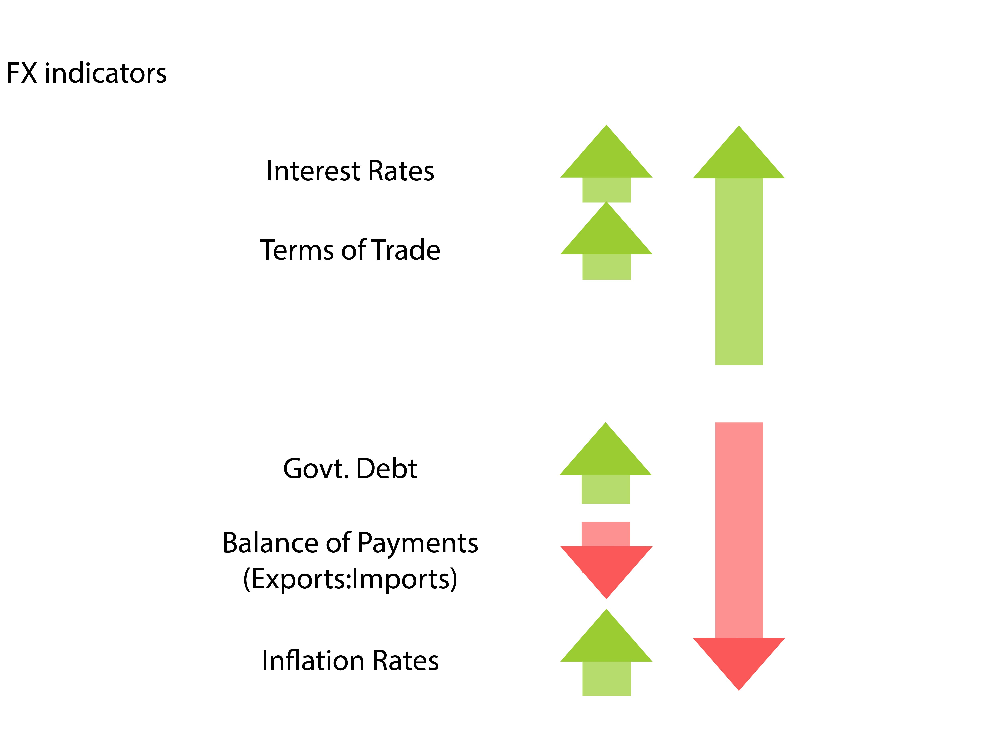

What Is Forex?
The foreign exchange market is the "place" where currencies are traded. Currencies are important to most people around the world, whether they realize it or not, because currencies need to be exchanged in order to conduct foreign trade and business. The foreign exchange market (forex or FX for short) is one of the most exciting, fast-paced markets around. Until recently, forex trading in the currency market had been the domain of large financial institutions, corporations, central banks, hedge funds and extremely wealthy individuals. The emergence of the internet has changed all of this, and now it is possible for average investors to buy and sell currencies easily with the click of a mouse through online brokerage accounts.

Trading instruments are represented by currency pairs. Currencies do not have an absolute value. When traded they are considered in pairs based on the domestic currency or the Base currency. This is often the currency of a trader's home country. The currency being bought of sold is called the counter currency.
Trade Instruments

A major difference between the forex and equities markets is the number of traded instruments: the forex market has very few compared to the thousands found in the equities market. The majority of forex traders focus their efforts on seven different currency pairs: the four majors, which include (EUR/USD, USD/JPY, GBP/USD, USD/CHF); and the three commodity pairs (USD/CAD, AUD/USD, NZD/USD). All other pairs are just different combinations of the same currencies, otherwise known as cross currencies. This makes currency trading easier to follow because rather than having to cherry-pick between 10,000 stocks to find the best value, all that FX traders need to do is "keep up" on the economic and political news of eight countries.
Daily Fluctuations
Daily currency fluctuations are usually very small. Most currency pairs move less than one cent per day, representing a less than 1% change in the value of the currency. Traders often make trades within the day betting on these small changes in the value of the currency.

When understanding the value of a currency on a particular day there are 5 values the trader has to keep in mind. The Opening value is the value that the market closed the previous day and the value at the beginning of the current trade day. The High and Low values are the extent to which the rate has changed in 24 hours. The current value is represented by the spread which consists of the Ask price and Bid price. These are the prices at which financial institutions buy and sell currencies respectively.

Though currencies don't tend to move as sharply as equities on a percentage basis (where a company's stock can lose a large portion of its value in a matter of minutes after a bad announcement), it is the leverage in the spot market that creates the volatility. For example, if you are using 100:1 leverage on $1,000 invested, you control $100,000 in capital. If you put $100,000 into a currency and the currency's price moves 1% against you, the value of the capital will have decreased to $99,000 - a loss of $1,000, or all of your invested capital, representing a 100% loss. In the equities market, most traders do not use leverage, therefore a 1% loss in the stock's value on a $1,000 investment, would only mean a loss of $10. Therefore, it is important to take into account the risks involved in the forex market before diving in.
Size of Markets
The need to exchange currencies, and the enormous leverage available to traders are the primary reason why the forex market is the largest, most liquid financial market in the world. It dwarfs other markets in size, even the stock market, with an average traded value of around U.S. $4,000 billion per day. (The total volume changes all the time, but as of August 2012, the Bank for International Settlements (BIS) reported that the forex market traded in excess of U.S. $4.9 trillion per day.)
Inflation
Changes in market inflation cause changes in currency exchange rates. A country with a lower inflation rate than another's will see an appreciation in the value of its currency. The prices of goods and services increase at a slower rate where the inflation is low. A country with a consistently lower inflation rate exhibits a rising currency value while a country with higher inflation typically sees depreciation in its currency and is usually accompanied by higher interest rates
Interest Rate
Changes in interest rate affect currency value and dollar exchange rate. Forex rates, interest rates, and inflation are all correlated. Increases in interest rates cause a country's currency to appreciate because higher interest rates provide higher rates to lenders, thereby attracting more foreign capital, which causes a rise in exchange rates
Balance of Payments
A country’s current account reflects balance of trade and earnings on foreign investment. It consists of total number of transactions including its exports, imports, debt, etc. A deficit in current account due to spending more of its currency on importing products than it is earning through sale of exports causes depreciation. Balance of payments fluctuates exchange rate of its domestic currency.
Government Debt
Government debt is public debt or national debt owned by the central government. A country with government debt is less likely to acquire foreign capital, leading to inflation. Foreign investors will sell their bonds in the open market if the market predicts government debt within a certain country. As a result, a decrease in the value of its exchange rate will follow.
Terms of Trade Indicator
Related to current accounts and balance of payments, the terms of trade is the ratio of export prices to import prices. A country's terms of trade improves if its exports prices rise at a greater rate than its imports prices. This results in higher revenue, which causes a higher demand for the country's currency and an increase in its currency's value. This results in an appreciation of exchange rate.

The five basic indicators can be used to speculate the value of a currency. However, there are other factors that are also used to indicate the forward value of a currency. A country's political state and economic performance can affect its currency strength. A country with less risk for political turmoil is more attractive to foreign investors, as a result, drawing investment away from other countries with more political and economic stability. Increase in foreign capital, in turn, leads to an appreciation in the value of its domestic currency. A country with sound financial and trade policy does not give any room for uncertainty in value of its currency. But, a country prone to political confusions may see a depreciation in exchange rates. When a country experiences a recession, its interest rates are likely to fall, decreasing its chances to acquire foreign capital. As a result, its currency weakens in comparison to that of other countries, therefore lowering the exchange rate. If a country's currency value is expected to rise, investors will demand more of that currency in order to make a profit in the near future. As a result, the value of the currency will rise due to the increase in demand. With this increase in currency value comes a rise in the exchange rate as well.